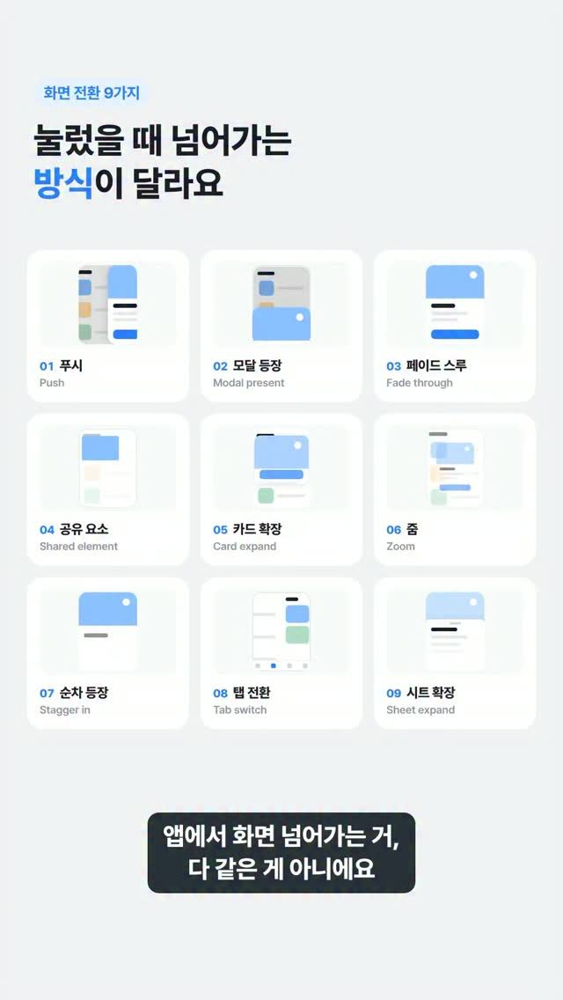

테크 · 릴스 · 2026-11-23
앱 화면 전환 방식 9가지: 푸시, 모달, 탭 전환, 카드 확장 등
앱에서 화면이 넘어가는 방식은 푸시, 모달 등장, 탭 전환, 카드 확장 등으로 서로 다르며 각각 고유한 이름이 있다.

- 앱에서 화면이 넘어가는 방식은 모두 같은 것이 아니다.
- 옆에서 밀고 들어오는 전환은 푸시(Push)라고 한다.
- 아래에서 올라와 기존 화면을 덮는 전환은 모달 등장(Modal present)이다.
- 하단 탭을 눌러 옆으로 화면이 바뀌는 것은 탭 전환(Tab switch)이다.
- 카드가 그대로 커져서 화면이 되는 것은 카드 확장(Card expand)이다.
- 이 외에도 페이드 스루, 공유 요소, 줌, 순차 등장, 시트 확장 등의 전환 방식이 있다.